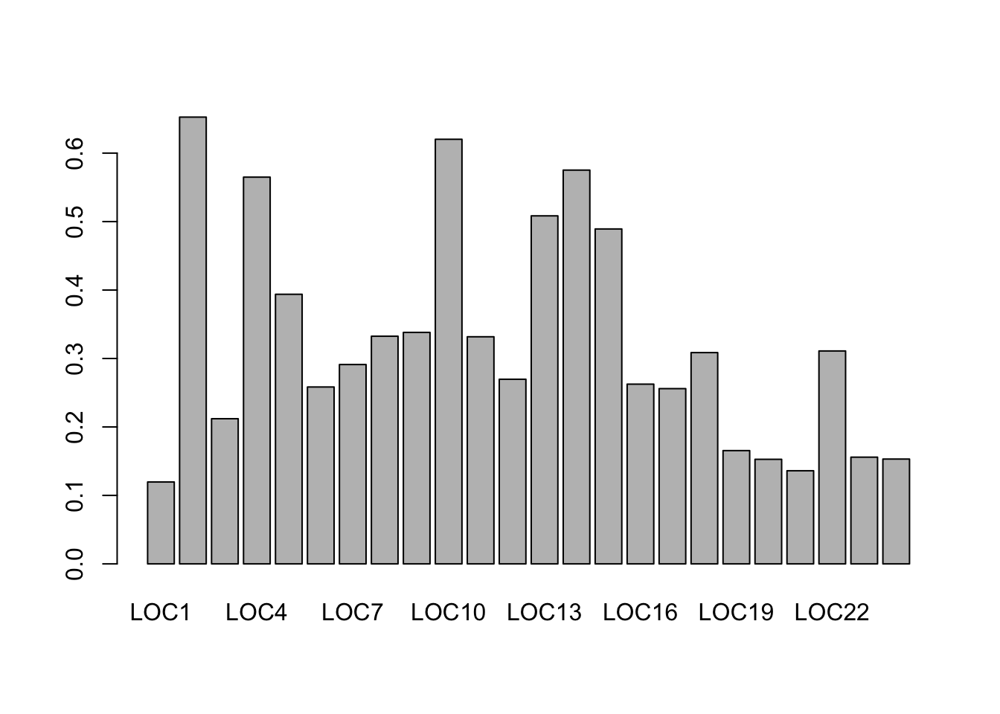

Week 3 Genetic Diversity
3.1 Manipulating dataframes
As we saw last week, the most common class we work with in R is a dataframe. This week, we’ll learn a few more ways to manipulate dataframes. This time we’ll use the built in palmerpenguins dataset:
install.packages("palmerpenguins")library(palmerpenguins)
head(penguins)## # A tibble: 6 × 9
## species island bill_length_mm bill_depth_mm flipper_length_… body_mass_g sex year mean
## <fct> <fct> <dbl> <dbl> <int> <int> <fct> <int> <dbl>
## 1 Adelie Torger… 39.1 18.7 181 3750 male 2007 997.
## 2 Adelie Torger… 39.5 17.4 186 3800 fema… 2007 1011.
## 3 Adelie Torger… 40.3 18 195 3250 fema… 2007 876.
## 4 Adelie Torger… NA NA NA NA <NA> 2007 NA
## 5 Adelie Torger… 36.7 19.3 193 3450 fema… 2007 925.
## 6 Adelie Torger… 39.3 20.6 190 3650 male 2007 975.One quick way to explore the data is using summary:
summary(penguins)## species island bill_length_mm bill_depth_mm flipper_length_mm
## Adelie :152 Biscoe :168 Min. :32.10 Min. :13.10 Min. :172.0
## Chinstrap: 68 Dream :124 1st Qu.:39.23 1st Qu.:15.60 1st Qu.:190.0
## Gentoo :124 Torgersen: 52 Median :44.45 Median :17.30 Median :197.0
## Mean :43.92 Mean :17.15 Mean :200.9
## 3rd Qu.:48.50 3rd Qu.:18.70 3rd Qu.:213.0
## Max. :59.60 Max. :21.50 Max. :231.0
## NA's :2 NA's :2 NA's :2
## body_mass_g sex year mean
## Min. :2700 female:165 Min. :2007 Min. : 738.9
## 1st Qu.:3550 male :168 1st Qu.:2007 1st Qu.: 950.9
## Median :4050 NA's : 11 Median :2008 Median :1076.6
## Mean :4202 Mean :2008 Mean :1115.9
## 3rd Qu.:4750 3rd Qu.:2009 3rd Qu.:1257.5
## Max. :6300 Max. :2009 Max. :1646.3
## NA's :2 NA's :2For quantitative columns, this gives you basic summary statistics and for categorical columns it gives you counts of each value. We could have also looked at the categorical data using the table command:
table(penguins$Species)## Warning: Unknown or uninitialised column: `Species`.## < table of extent 0 >
Let’s take just the quantitative data for a moment:
quant <- penguins[,3:6]
head(quant)## # A tibble: 6 × 4
## bill_length_mm bill_depth_mm flipper_length_mm body_mass_g
## <dbl> <dbl> <int> <int>
## 1 39.1 18.7 181 3750
## 2 39.5 17.4 186 3800
## 3 40.3 18 195 3250
## 4 NA NA NA NA
## 5 36.7 19.3 193 3450
## 6 39.3 20.6 190 3650For easy summaries of rows or columns, we can us the commands colSums, colMeans, rowSums, and rowMeans
means <- rowMeans(quant)Maybe we want to add a column to the initial iris dataframe that has the mean of the different measurements. We can do that in two different ways:
penguins$mean <- rowMeans(quant) # Caluclate and name the new column at the same time or...
means2 <- rowMeans(quant) # Calculate means
newpenguins <- cbind(penguins,means2) # cbind (column bind) to iris dataframe
head(newpenguins)## species island bill_length_mm bill_depth_mm flipper_length_mm body_mass_g sex year
## 1 Adelie Torgersen 39.1 18.7 181 3750 male 2007
## 2 Adelie Torgersen 39.5 17.4 186 3800 female 2007
## 3 Adelie Torgersen 40.3 18.0 195 3250 female 2007
## 4 Adelie Torgersen NA NA NA NA <NA> 2007
## 5 Adelie Torgersen 36.7 19.3 193 3450 female 2007
## 6 Adelie Torgersen 39.3 20.6 190 3650 male 2007
## mean means2
## 1 997.200 997.200
## 2 1010.725 1010.725
## 3 875.825 875.825
## 4 NA NA
## 5 924.750 924.750
## 6 974.975 974.9753.2 Using the adegenet package to calulate heterozygosity
Today we’ll use microsatellite data from the Weeks et al. (2017) paper using genetic analysis to look at the effects of population recovery after an introduction. You can download it here.
Let’s read in this file:
data <- read.csv("data/weeks_genotypes.csv") # Read in a fileTake a look at the data:
head(data)## ID Pop Year LOC1 LOC2 LOC3 LOC4 LOC5 LOC6 LOC7 LOC8 LOC9
## 1 1 MtBuller 2010 311/311 245/249 303/303 195/201 218/218 211/211 321/321 240/240 157/157
## 2 2 MtBuller 2010 311/311 245/249 303/303 195/201 218/218 211/211 321/321 240/240 157/157
## 3 3 MtBuller 2010 311/311 245/249 303/303 NA/NA 218/218 211/211 321/321 240/240 157/157
## 4 4 MtBuller 2010 311/311 249/249 303/303 195/195 218/218 211/211 321/321 240/240 157/157
## 5 5 MtBuller 2010 309/311 249/249 303/303 195/201 218/218 211/211 321/321 240/240 157/157
## 6 6 MtBuller 2010 309/311 NA/NA 303/303 201/201 218/218 211/211 321/321 240/240 157/157
## LOC10 LOC11 LOC12 LOC13 LOC14 LOC15 LOC16 LOC17 LOC18 LOC19 LOC20
## 1 113/113 178/178 125/125 309/318 119/119 144/146 214/214 241/241 160/160 150/150 117/117
## 2 113/113 178/178 125/125 309/309 119/148 144/146 214/214 241/241 160/160 150/150 117/117
## 3 113/113 178/178 125/125 309/309 119/119 144/144 214/216 241/241 160/160 150/150 117/117
## 4 113/113 178/178 125/125 309/309 119/119 144/146 214/214 241/241 160/160 150/150 117/117
## 5 113/115 178/178 125/125 309/318 148/148 144/146 216/216 241/241 160/160 150/150 117/117
## 6 113/115 178/178 125/125 309/318 119/148 144/144 214/214 241/241 160/160 150/150 117/117
## LOC21 LOC22 LOC23 LOC24
## 1 141/141 137/137 157/157 177/177
## 2 141/141 137/137 157/157 177/177
## 3 141/141 137/137 157/157 177/177
## 4 141/141 137/137 157/157 177/177
## 5 141/141 137/141 157/157 177/177
## 6 141/141 137/137 157/157 177/177The first column is an id assigned to each individual. The second column gives the populations from which the individual was sampled. The third column gives the year of sampling. The remaining columns give the microsatellite data. Each individual has two numbers which represent the fragment lengths (read on a gel). If the two fragment lengths are the same, the individual is a heterozygote. If they are different, the individual is a homozygote.
We will use the package adegenet to read in the microsatellite data and calculate heterozygosity. The manual for this package is here. Install the package and call the library:
install.packages("adegenet")library(adegenet)
The first thing we need to do is let the adegenet read in the microsatellite data. We can do this with the df2genind. Let’s ask for help on that command:
?df2genindLook at the arguments. How can we format our allele data to meet the requirements of the package?
alleles <- data[,4:ncol(data)]The function ncol gives us the number of columns. So here we are asking for all columns except the first three, which do not contain genotype data. Okay, let’s see if that works
genind <- df2genind(alleles,sep="/",NA.char="NA/NA")
summary(genind)##
## // Number of individuals: 524
## // Group sizes: 524
## // Number of alleles per locus: 5 5 10 7 8 3 7 16 3 11 10 2 6 10 5 2 10 2 5 3 2 10 9 4
## // Number of alleles per group: 155
## // Percentage of missing data: 1.03 %
## // Observed heterozygosity: 0.12 0.68 0.29 0.6 0.48 0.3 0.36 0.38 0.35 0.64 0.43 0.22 0.54 0.6 0.5 0.21 0.38 0.25 0.25 0.17 0.17 0.39 0.26 0.25
## // Expected heterozygosity: 0.12 0.64 0.36 0.7 0.58 0.32 0.5 0.56 0.51 0.74 0.56 0.45 0.64 0.61 0.63 0.25 0.44 0.46 0.29 0.19 0.35 0.49 0.33 0.38
The object summary has most of the information we want:
results <- summary(genind)
names(results) # Show the different output values we can look at## [1] "n" "n.by.pop" "loc.n.all" "pop.n.all" "NA.perc" "Hobs" "Hexp"results$Hobs # Show observed heterozygosity## LOC1 LOC2 LOC3 LOC4 LOC5 LOC6 LOC7 LOC8 LOC9
## 0.1150097 0.6812749 0.2913386 0.5984405 0.4799235 0.2972973 0.3556405 0.3754864 0.3512476
## LOC10 LOC11 LOC12 LOC13 LOC14 LOC15 LOC16 LOC17 LOC18
## 0.6382979 0.4335260 0.2160612 0.5393474 0.5965583 0.4990366 0.2103250 0.3754789 0.2471264
## LOC19 LOC20 LOC21 LOC22 LOC23 LOC24
## 0.2480620 0.1739962 0.1685824 0.3850575 0.2553191 0.2528736
Notice that observed and expected heterozygosity have been calculated, but across the entire dataset. What if we supply different populations? We use the seppop function to tell it we want separate measurements for each population
genindPop <- df2genind(alleles,sep="/",
NA.char="NA/NA",
pop=data$Pop)
genindPop <- seppop(genindPop)
genindPop## $MtBuller
## /// GENIND OBJECT /////////
##
## // 420 individuals; 24 loci; 155 alleles; size: 316.4 Kb
##
## // Basic content
## @tab: 420 x 155 matrix of allele counts
## @loc.n.all: number of alleles per locus (range: 2-16)
## @loc.fac: locus factor for the 155 columns of @tab
## @all.names: list of allele names for each locus
## @ploidy: ploidy of each individual (range: 2-2)
## @type: codom
## @call: .local(x = x, i = i, j = j, pop = ..1, treatOther = ..2, quiet = ..3,
## drop = drop)
##
## // Optional content
## @pop: population of each individual (group size range: 420-420)
##
## $MtHigginbotham
## /// GENIND OBJECT /////////
##
## // 104 individuals; 24 loci; 155 alleles; size: 102.9 Kb
##
## // Basic content
## @tab: 104 x 155 matrix of allele counts
## @loc.n.all: number of alleles per locus (range: 2-16)
## @loc.fac: locus factor for the 155 columns of @tab
## @all.names: list of allele names for each locus
## @ploidy: ploidy of each individual (range: 2-2)
## @type: codom
## @call: .local(x = x, i = i, j = j, pop = ..1, treatOther = ..2, quiet = ..3,
## drop = drop)
##
## // Optional content
## @pop: population of each individual (group size range: 104-104)
Notice the two locations are now separate. We can get the heterozygosity separately for each population:
MtBuller <- summary(genindPop$MtBuller)
MtHiggenbotham <- summary(genindPop$MtHigginbotham)
MtBuller$Hobs # Observed heterozygosity for all Mt Buller Samples## LOC1 LOC2 LOC3 LOC4 LOC5 LOC6 LOC7 LOC8 LOC9
## 0.1196172 0.6526055 0.2120482 0.5649038 0.3937947 0.2583732 0.2911695 0.3325359 0.3381295
## LOC10 LOC11 LOC12 LOC13 LOC14 LOC15 LOC16 LOC17 LOC18
## 0.6201923 0.3317422 0.2696897 0.5083532 0.5751790 0.4892086 0.2625298 0.2559809 0.3086124
## LOC19 LOC20 LOC21 LOC22 LOC23 LOC24
## 0.1654676 0.1527446 0.1360382 0.3110048 0.1558753 0.1531100MtBuller$Hexp # Expected heterozygosity for all Mt Buller Samples## LOC1 LOC2 LOC3 LOC4 LOC5 LOC6 LOC7 LOC8 LOC9
## 0.1129982 0.6064596 0.2329279 0.6085111 0.4022334 0.2458735 0.2869544 0.3583595 0.3399151
## LOC10 LOC11 LOC12 LOC13 LOC14 LOC15 LOC16 LOC17 LOC18
## 0.6384350 0.3431457 0.3045010 0.5145363 0.5734332 0.5079217 0.3030058 0.2639076 0.3282291
## LOC19 LOC20 LOC21 LOC22 LOC23 LOC24
## 0.1647056 0.1750275 0.1629775 0.3484438 0.1637021 0.1735194
3.2.1 Plotting heterozygosity
Let’s use a barplot to look at variation in heterozygostiy across all our markers:
barplot(MtBuller$Hobs)
When we have a bunch of markers, we often take the mean across all those markers:
mean(MtHiggenbotham$Hobs) # Mean observed heterozygosity in the Mt Higgenbotham population## [1] 0.5262125Compare this value to the paper.
3.3 Homework
Now that we know how to estimate observed and expected heterozygosity, we’ll look at changes over time. Start a new script for your homework
3.3.1 Homework 3: Write a script that does the following:
Read in “genotypes.csv” and subset the dataframe to Mt Buller samples only. How many samples do you have from each year?
Calculate mean observed heterozygosity for each year. Put these into a single dataframe.
Calculate mean expected heterozygosity for each year. Add these to the dataframe from question 2.
Plot mean expected heterozygosity over time.
Add a vertical lines to your plot to show when introductions took place (hint - use the
ablinecommand)